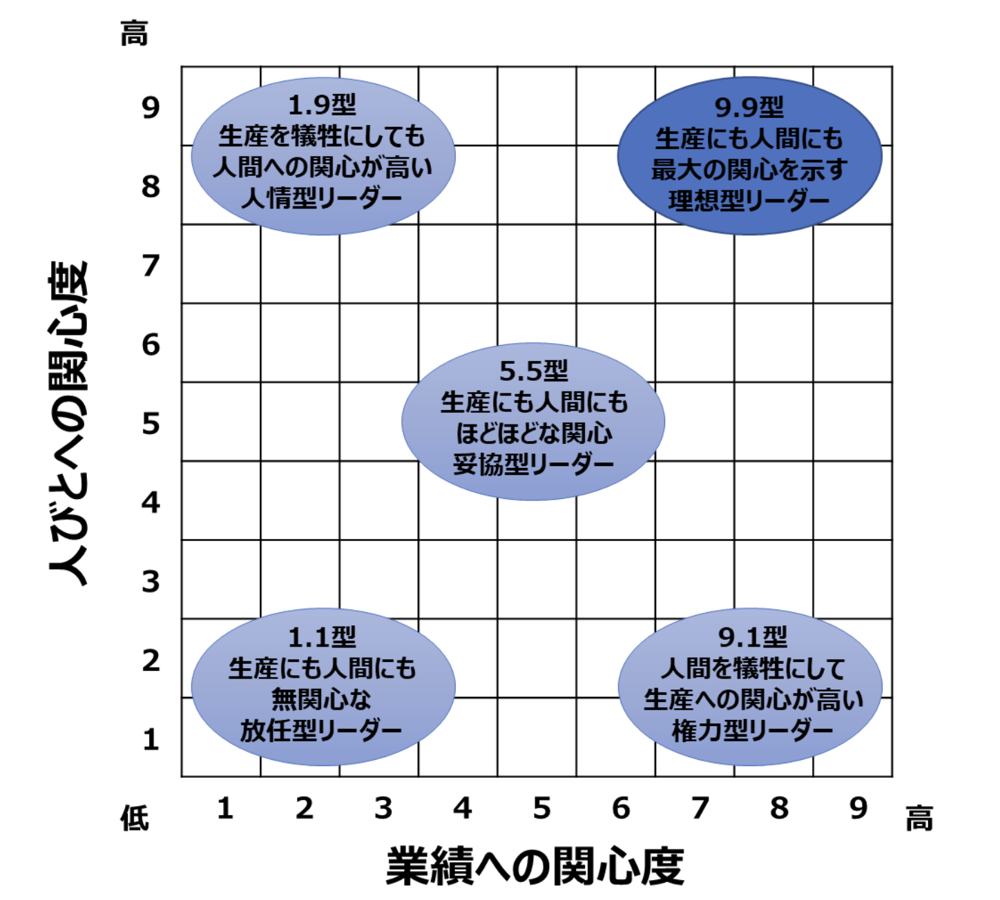
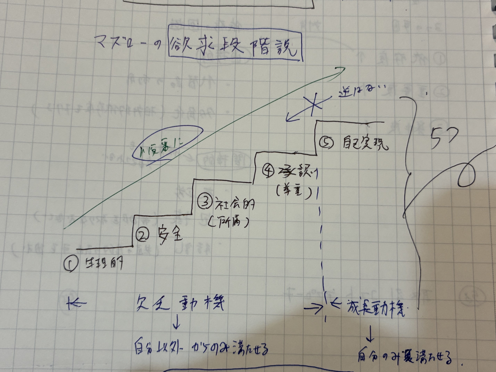
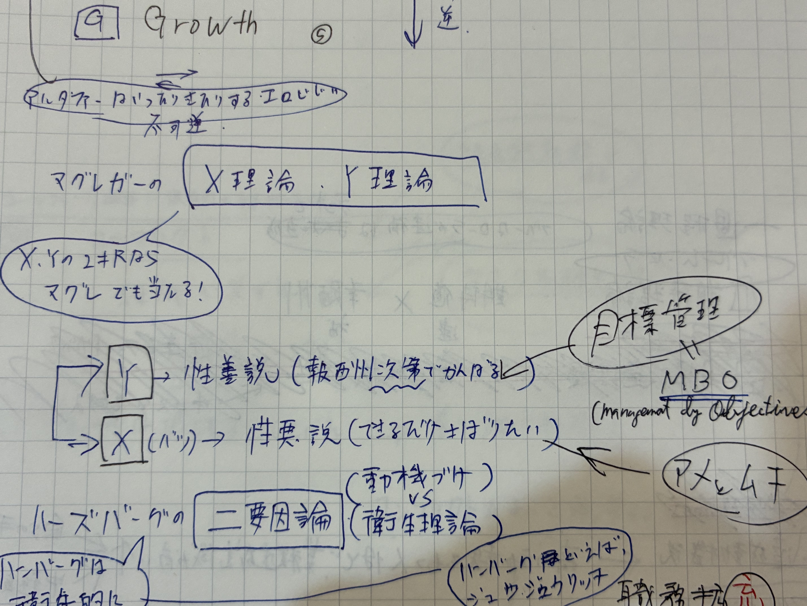
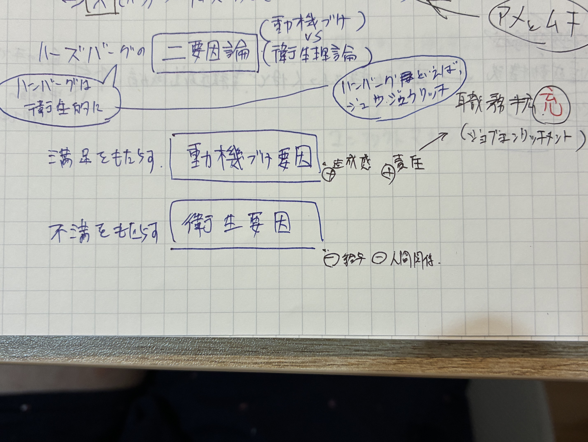
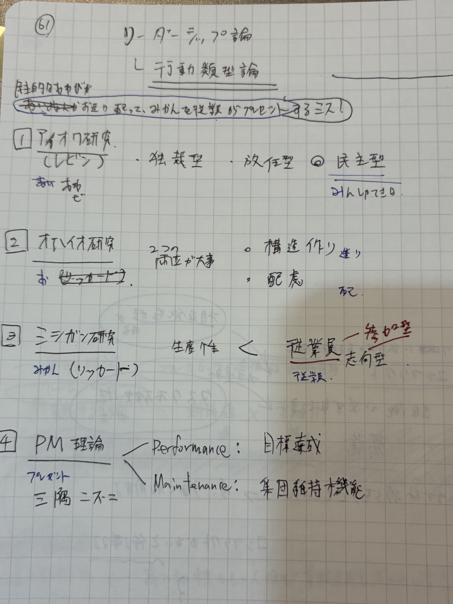
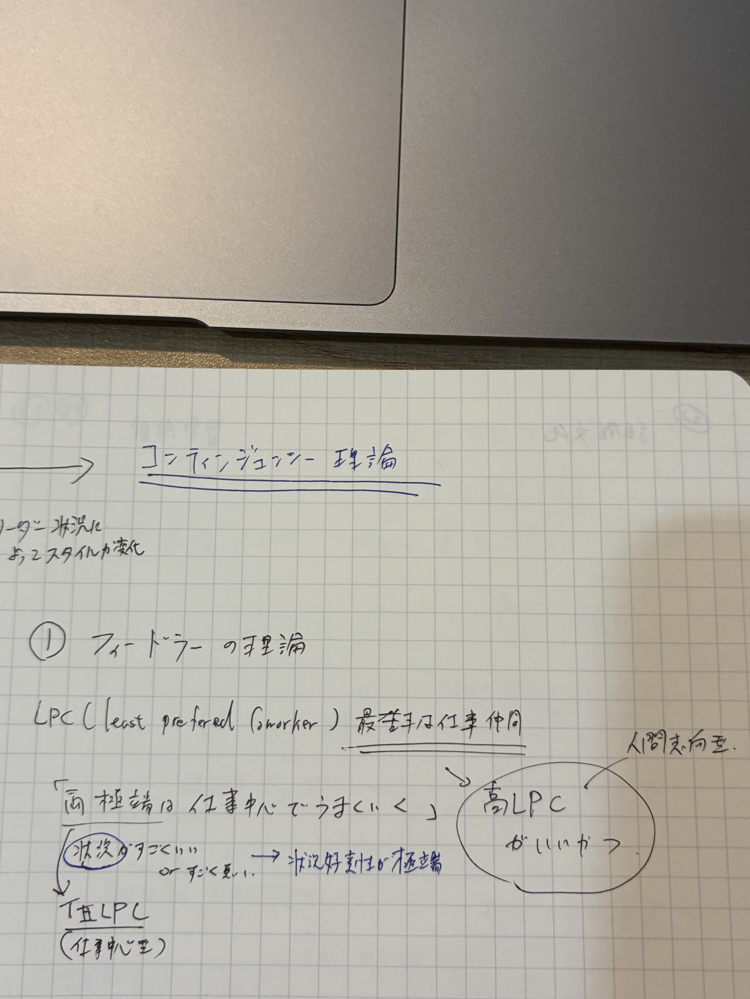
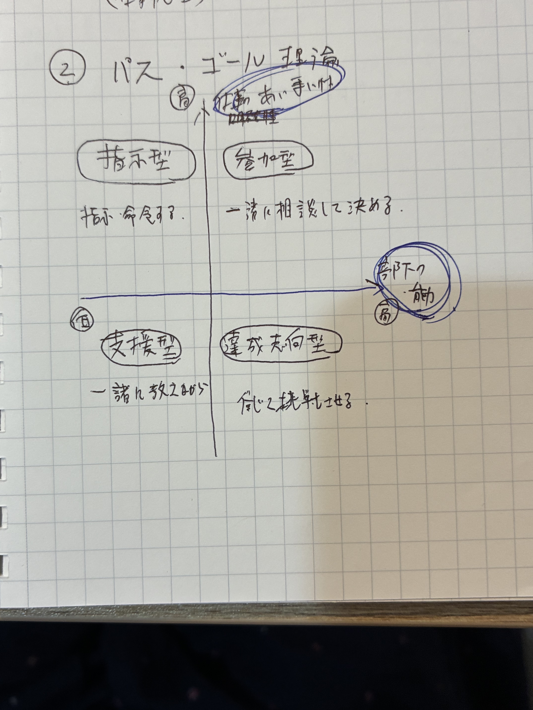
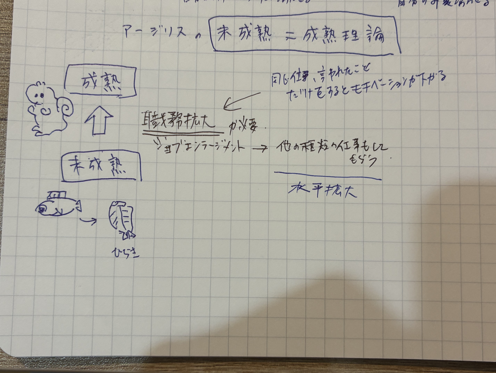
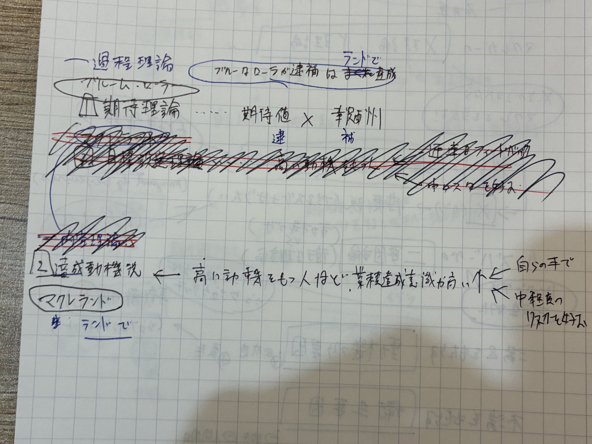
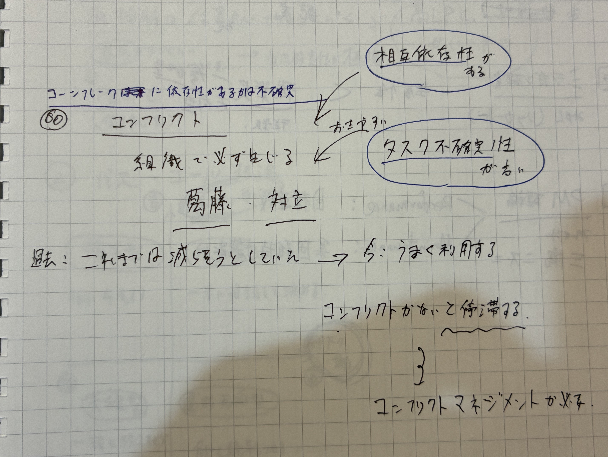

Step1：そもそも「組織と人材」って何を学ぶの？
バーナード
ハーズバーグ
SL理論
変革
左から右へ：歴史→個人→集団→組織全体と視点が広がっていく流れ。
Step2：なぜ必要か ― 組織は「ヒト」で動くから
🤖 機械なら命令で動くが、人は違う
- 🔹 同じ給料・同じ環境でも、やる気しだいで成果は2倍3倍違う → だからモチベーション理論
- 🔹 優秀なリーダーがいるかで組織の運命が変わる → だからリーダーシップ理論
- 🔹 強い文化を持つ会社は戦略も実行できる（例：トヨタ生産方式） → だから組織文化・学習・変革
Step3：マズローの欲求5段階 ― 一番大事な土台
下の欲求が満たされると上の欲求を求める。低次の欲求は満たされたら動機にならない。
Step4：リーダーは「人」と「仕事」両方への気配りが大事
💡 マネジリアル・グリッド（ブレーク & ムートン）
R.ブレークとJ.ムートンが提唱。PM理論と同様に、「業績（生産）への関心度」と「人びとへの関心度」という2軸を使う。
縦横それぞれ1〜9までの数値で位置づける：
- (1,1)＝人への関心も業績への関心も最低
- (9,9)＝両方の関心が最高でもっとも良いリーダー行動
基本思想：「仕事の指示をきちんとして、部下たちとの関係を大切にする」ことがリーダー行動の基本。

| 型 | 特徴 | 通称 |
|---|---|---|
| 9.9型 ⭐ | 生産にも人間にも最大の関心を示す | 理想型リーダー |
| 1.9型 | 生産を犠牲にしても人間への関心が高い | 人情型リーダー（カントリークラブ） |
| 9.1型 | 人間を犠牲にして生産への関心が高い | 権力型リーダー（権威服従） |
| 5.5型 | 生産にも人間にもほどほどな関心 | 妥協型（中庸型）リーダー |
| 1.1型 | 生産にも人間にも無関心 | 放任型リーダー |
試験頻出：「9.9型が理想」
Step5：組織の動き方 ― 集団・文化・学習の3つを押さえる
👥 集団
集団になると個人と違う行動が出る。団結が強すぎると閉鎖的に → グループシンク（集団浅慮）の弊害
🏢 文化
メンバー間で自然に共有される価値観・行動パターン。トップが掲げる理念とは別物。戦略実行のカギ
📚 学習
既存の枠内で改善＝シングルループ／枠そのものを変える＝ダブルループ（イノベーションに必須）
Step6：意思決定 ― サイモンの「限定合理性」
🤔 一言でいうと「人は完璧な選択はできない」
サイモンが言ったのはたった2つ：
- 人間の頭はすべての選択肢を比較し尽くす能力はない（＝限定合理性）
- だから人は「ベスト」ではなく「これでいいか」と納得できた解で決める（＝満足化原理）
🍔 具体例：ランチの選び方
| 考え方 | 行動 |
|---|---|
| 経済人モデル （完全合理） | 街中の全店舗を価格・味・距離で比較し、世界一コスパが高い店を選ぶ。 → 現実にはムリ |
| 経営人モデル （限定合理） | 「近くて、1000円以下で、不味くない」を満たした店を見つけたらそこに決める。 → これが満足化。実際の人間の行動 |
🏢 具体例：会社の新製品開発
「最も儲かる新製品」を出すためには、世界中の市場・技術・競合を完全分析する必要があるが そんな情報は集まらない。だから現実の経営者は──
集められた範囲の情報で 「これなら売れそう、利益も出そう」と納得できる案 に決めてGOを出す。
これが満足化原理であり、現実の意思決定の姿。
⚖️ 2つのモデルの対比
経済人モデル
（古典派の前提）
人は完全合理。
全選択肢を比較して最適解を選ぶ。
↑現実離れ
経営人モデル
（サイモン）
人は限定合理。
納得できた時点で満足解で決める。
↑現実に即している
ヒーロー4枚（4分野を一目で）
欲求・衛生・動機づけ
状況に応じた使い分け
シングル／ダブルループ
限定合理性・満足化
🃏 フラッシュカードで反芻（クリックで答え）
ここだけ満たされても次が湧く例外
人間9点×業績9点（両方最高）
最適解でなく満足できる解を選ぶ
提唱者：ジャニス
- ❶ 4分野：モチベ／リーダー／組織活性／意思決定＋経営管理史
- ❷ マズロー5段階：生→安→社→自我→自己実現。低次は満たされたら動機にならない
- ❸ マネジリアル・グリッド理想は9.9型。サイモンは限定合理性＋満足化
- ❹ 学習＝シングル（低次）／ダブル（高次）。集団浅慮＝グループシンク
このタブの穴埋め（本文の表・図を空欄化）
本文に出てきた表・図をそのまま空欄化。各マスをクリックでON/OFF。下の「全表示／リセット」で一括操作も可。
満たしても次が湧く＝例外（成長動機）
| 型 | 特徴 | 通称 |
|---|---|---|
| 9.9型 ⭐ | 生産にも人間にも最大の関心 | 理想型リーダー |
| 1.9型 | 人間への関心が高い（生産は犠牲） | 人情型（カントリークラブ） |
| 9.1型 | 生産への関心が高い（人間は犠牲） | 権力型（権威服従） |
| 5.5型 | 両方ほどほど | 妥協型（中庸） |
| 1.1型 | 両方とも無関心 | 放任型 |
モチベーション理論：内容理論と過程理論
📦 内容理論
何が動機になるか
マズロー／ハーズバーグ／ERG／マクレランド
🔄 過程理論
どう動機が生まれるか
ブルーム期待理論／公平理論／目標設定理論
📖 マズローの欲求5段階説（内容理論の基礎）
- 🔹 欲求は5段階。下から順に積み上がる
- 🔹 下の段がある程度満たされて初めて、ひとつ上の段が動機になる
（空腹で死にそうな人に「自己実現を」は響かない） - 🔹 満たされた下位欲求は、もう動機にならない（→ハーズバーグの衛生要因に似た性質）
- 🔹 ⑤ 自己実現だけは例外 ── 満たしても次々と目標が湧く「終わりのない成長欲求」
- 🔹 ①〜④＝欠乏動機（外部から満たせる）／⑤＝成長動機（自分でしか満たせない）
なりたい自分になりたい／可能性を発揮したい
周りから認められたい・尊敬されたい
仲間に入りたい・誰かに必要とされたい
身の危険がない・経済的に安定したい
食べたい・眠りたい（生命維持）

1次試験ポイント：自己実現の欲求だけは「満たされても次が湧く」例外。
過去問：H19-15、H22-14、H27-17、H29-16、R4-16、R4-21
🎭 マグレガーのX理論・Y理論
🎵 語呂：「X・Yの二択なら マグレでも当たる」 ── 詳しくは「語呂」タブへ
- 🔸 管理者が部下をどんな人間と見るか（人間観）で、管理スタイルは自動的に変わる
- 🔸 X理論＝性悪説（仕事が嫌い・サボる・責任を取りたがらない）→ 管理は命令と統制（監視＋アメとムチ）
- 🔸 Y理論＝性善説（働くのは自然・条件が整えば自ら目標を立て責任を負う）→ 管理は目標による管理（MBO：Management By Objectives）
- 🔸 マグレガーはY理論を推奨。Y理論はマズローの高次欲求（④⑤）、X理論は低次欲求中心の人間観に対応
👿 X理論（性悪説）
人間観：もともと仕事が嫌い／放っておくとサボる／責任を取りたがらない
↓
管理スタイル：命令と統制（細かく指示・監視・アメ＝賞与とムチ＝罰で動かす）
対応するのは：マズローの①②など低次欲求中心の人間観
😇 Y理論（性善説）
人間観：働くのは自然なこと／条件が整えば自分で目標を立て、進んで責任を引き受け、工夫もする
↓
管理スタイル：本人に目標を立てさせ達成を支援する＝目標による管理（MBO：Management By Objectives）
対応するのは：マズローの④⑤など高次欲求中心の人間観。マグレガーはこちらを推奨

1次・2次試験ポイント：Y理論＝マズローの高次欲求段階。MBO（Management By Objectives）と結びつけて出題。
💡 ハーズバーグの動機づけ・衛生理論（2要因理論）
🎵 語呂：「ハンバーグは 衛生的（衛生要因）に、ドキドキ（動機づけ要因）、ジュージュー（職務充実の"充"）」 ── 詳しくは「語呂」タブへ
- 🔷 インタビューで判明 ── 「満足の原因」と「不満の原因」はまったくの別物
- 🔷 満足の反対＝「満足がない」（≠不満）／不満の反対＝「不満がない」（≠満足）
- 🔷 衛生要因＝不満の原因（会社の方針・作業条件・給与・人間関係）。悪いと不満爆発／良くしてもやる気にはならない
- 🔷 動機づけ要因＝満足＝やる気の原因（達成感・承認・やりがい・責任・昇進や成長）
- 🔷 実践策＝職務充実（ジョブ・エンリッチメント）＝計画・判断・チェックなど"上位の職務"を任せ責任と裁量を増やす＝垂直的拡大
引っかけ②：職務充実＝ハーズバーグ＝垂直／職務拡大＝アージリス＝水平。逆にしない。

アメリカの臨床心理学者フレデリック・ハーズバーグが提唱。「仕事の満足に関わる要因（＝動機づけ要因）」と「不満足に関わる要因（＝衛生要因）」は明確に別ものと主張した。
・衛生要因＝減点項目：満たされても加点されない／満たされないと減点される（給料が低い・人間関係が悪い → 不満爆発）
・動機づけ要因＝加点項目：満たされなくても減点はされない／満たされると加点される（達成感・承認 → やる気UP）
そこでハーズバーグは「動機づけ要因を刺激するために、管理職に任命する・意思決定の権限を与えるといった職務充実（job enrichment）＝職務の"垂直的"拡大が有効」と述べた。（※「職務の種類を横に増やす"水平的"拡大」は職務拡大＝job enlargement＝アージリス。混同注意）
1次引っかけ：「給与」は衛生要因（不満防止）であって動機づけ要因ではない。超頻出引っかけ！
1次引っかけ：職務充実（ハーズバーグ・垂直的＝job enrichment）と職務拡大（アージリス・水平的＝job enlargement）を混同しない。
リーダーシップ：3世代の理論
1. 資質特性論
優れたリーダーの個人特性を分析。統一見解は出ず限界。
2. 行動類型論
外から見える行動パターンで分析（PM理論／グリッド／オハイオ）
3. コンティンジェンシー
状況により有効なリーダーは異なる（フィードラー／パス・ゴール／SL）
経営管理思想の系譜（tree）
🃏 フラッシュカードで反芻（クリックで答え）
「権限」「報酬」は含まれない
動機づけ要因ではない（最頻出引っかけ）
社会人モデルへの転換点
- ❶ テイラー＝経済人モデル／メイヨー＝社会人モデル／サイモン＝経営人モデル
- ❷ バーナード3要素＝共通目的・協働意欲・コミュニケーション
- ❸ ハーズバーグ：給与・人間関係＝衛生要因／達成・承認・成長＝動機づけ要因
- ❹ マグレガーY理論⇔MBO（Management By Objectives：目標による管理）／リーダーシップ3世代を区別
このタブの穴埋め（本文の表・図を空欄化）
本文に出てきた表・図をそのまま空欄化。各マスをクリックでON/OFF。下の「全表示／リセット」で一括操作も可。
本文に出てきた表・図をそのまま空欄化。各マスをクリックでON/OFF。
👿 X理論（性悪説）
人間観＝仕事が嫌い・サボる・責任を取りたがらない
管理＝命令と統制（監視＋アメとムチ）
マズロー対応＝低次欲求中心
😇 Y理論（性善説）
人間観＝条件が整えば自ら目標を立て責任を負い工夫する
管理＝目標による管理（MBO：Management By Objectives）
マズロー対応＝高次欲求（④⑤）中心
| 衛生要因（不満防止＝減点項目） | 動機づけ要因（満足＝やる気＝加点項目） | |
|---|---|---|
| 例 | 会社の政策と管理方式／監督／給与／対人関係／作業条件 | 達成／承認／仕事そのもの／責任／昇進・成長 |
| 対策 | 満たしても加点なし（不満が減るだけ） | 職務充実（ジョブ・エンリッチメント）＝垂直的拡大（責任・裁量を加える） |
📚 このタブで学ぶこと
- 経営管理思想がどう発展してきたか（テイラー → メイヨー → バーナード → サイモン）
- 3つの人間モデルの違いを具体例とイメージで一気に押さえる
100年の流れを1分で
科学的管理法
管理過程論
ホーソン実験
近代組織論
意思決定論
人間観の変化：経済人（合理マシン）→ 社会人（感情を持つ）→ 経営人（限界がある）
① テイラー：科学的管理法（1900年代初頭）
📖 一言でいうと
経験頼みの成行管理をやめ、1日の作業量（課業）をストップウォッチで科学的に決めよう、という考え方。「IE（Industrial Engineering）の祖」と呼ばれる。

🏭 具体例：銑鉄運びの実験
ベツレヘム製鋼所で、銑鉄（1個42kg）を運ぶ労働者の作業を観察。休憩のタイミングと持ち方を「科学的に」設計し直した結果：
- 1日の運搬量：12.5トン → 47トン（約3.8倍）
- 賃金：1.15ドル → 1.85ドル（達成者に高賃金）
→ 「客観的に計測して標準を作る」という発想は、今のオペレーション管理の原点。
📝 4つの管理原則
- 課業の科学的設定（時間研究・動作研究）
- 標準作業条件の整備（道具・手順を統一）
- 達成者に高賃金
- 未達者に低賃金（差別出来高賃金）
1次引っかけ：テイラーは工場現場の管理（全社管理はファヨール）。人間観は経済人モデル（賃金で動く）。
② ファヨール：管理過程論（1916）
📖 テイラーとの違い
テイラーが工場の作業効率を扱ったのに対し、ファヨールは「経営者の仕事とは何か」を体系化。鉱山会社の社長としての経験から、管理＝5つの機能と定義した。
→ 現代の PDCAサイクル の祖先。「全社的視点」「マネジメントの一般原則」を初めて打ち出した。
③ メイヨー：ホーソン実験 → 人間関係論（1920〜30年代）
📖 一言でいうと
米ウエスタン・エレクトリック社のホーソン工場で「照明や休憩が生産性に与える影響」を調査。意外な結果が出た。

💡 実験で起きたこと（ストーリー）
- 照明を明るくしたら → 生産性UP
- 照明を暗く戻したら → なんと生産性もUP（!?）
- 休憩時間を変えても、賃金を変えても、結果は同じ「上がる」傾向
- 結論：作業条件そのものではなく、「自分たちは実験に選ばれた特別なチームだ」という連帯感や注目が生産性を上げていた
＝ 非公式な人間関係（インフォーマル組織）こそが生産性を左右する、と発見。これを体系化したのがレスリスバーガーで、社会人モデル（人は感情をもつ社会的存在）への大転換点。
④ バーナード：近代組織論の父（1938）
📖 一言でいうと
電話会社の元社長が著した『経営者の役割』。組織を「2人以上の意識的に調整された活動の体系」と定義し、近代組織論の出発点となった。

🔑 組織成立の3要素（超頻出）
🎯 共通目的
「みんなで何を達成するか」が共有されている。
例：「シェア1位を取る」
💪 協働意欲
「貢献したい」という気持ち。
例：その目的に燃える社員たち
💬 コミュニケーション
目的と意欲をつなぐ意思疎通。
例：朝会・1on1・社内チャット
1次引っかけ：「権限」「報酬」「ルール」は3要素に含まれない。語呂「共・協・コミュ（きょう・きょう・コミュ）」で覚える。
組織とは 「単なる人の集まり」以上のもの。バーナードは組織を「2人以上の人々が、何かを成し遂げようとして意識的に調整した活動の体系」と定義（1938年『経営者の役割』）。組織が成立するには次の3要素がすべて必要。
みんなで達成すべき目標の共有（≒経営戦略）
無いと"ただの群衆"
「この組織のために力を出したい」
＝モラール（士気）の源
目的と意欲をつなぐ橋
滞ると目的も意欲も空回り
📜 権威受容説（リーダー命令はなぜ通る？）
「命令は、命令した瞬間に有効になるのではない。受け取る側が受け入れて初めて有効」という考え。4条件すべて満たすと受け入れられる：
- 理解できる
- 組織目的と合致している
- 個人的利害に反しない
- 実行可能である
この「疑問なく受け入れられる範囲」を無関心圏と呼ぶ。リーダーは無関心圏を広げる工夫が必要。
⑤ サイモン：限定合理性（1947）
📖 バーナードを継承した最後のピース
バーナードを継いだサイモンは、「人間は情報処理能力に限界がある」と認め、最適解ではなく満足できる解で動くと指摘。これが経営人モデル。
→ 詳しくは「入門タブ」の Step6「サイモンの限定合理性」を参照（ランチ例・新製品開発例つき）。
3つの人間モデル ― 一括対比
| モデル | 提唱者 | 人間観 | 動機の源 | イメージ |
|---|---|---|---|---|
| 経済人 | テイラー | 合理的に動く機械 | 賃金 | 💰 お金で動く |
| 社会人 | メイヨー／レスリスバーガー | 感情を持つ社会的存在 | 仲間との関係・承認 | 👥 仲間とつながりたい |
| 経営人 | サイモン | 合理性に限界がある人間 | 納得できる解 | 🤔 ベストでなく満足解 |
フラッシュカードで反芻
賃金で動く合理マシン
（権限／報酬は含まれない）
疑問なく従う範囲
PDCAの祖先
限定合理性＋満足化
- ❶ テイラー＝経済人（賃金）／メイヨー＝社会人（感情）／サイモン＝経営人（限界）
- ❷ ホーソン実験の結論＝非公式な人間関係が生産性を左右
- ❸ バーナード3要素＝共通目的・協働意欲・コミュニケーション（「きょう・きょう・コミュ」）
- ❹ 権威受容説：命令は受け入れられて初めて有効。範囲＝無関心圏
このタブの穴埋め
本文の表をそのまま空欄化。各マスをクリックでON/OFF。
| モデル | 提唱者 | 人間観 | 動機の源 |
|---|---|---|---|
| 経済人 | テイラー | 合理的に動く機械 | 賃金 |
| 社会人 | メイヨー／レスリスバーガー | 感情を持つ社会的存在 | 仲間との関係・承認 |
| 経営人 | サイモン | 合理性に限界がある人間 | 納得できる解 |
| 学者／実験 | キーワード |
|---|---|
| テイラー（科学的管理法） | 課業の科学的設定／時間研究・動作研究／4つの管理原則（達成者に高賃金）／工場現場の管理 |
| ファヨール（管理過程論） | 管理＝予測・組織・命令・調整・統制の5機能（＝PDCAの祖先）／全社管理 |
| メイヨー（ホーソン実験） | 作業条件と生産性に相関なし→非公式な人間関係（インフォーマル組織）が生産性を左右／体系化＝レスリスバーガー（社会人モデル） |
| バーナード（近代組織論） | 組織＝協働システム／組織3要素＝共通目的・協働意欲・コミュニケーション／経営者の役割＝共通目的（経営戦略）を示すこと |
| バーナード（権威受容説） | 命令は受け手が受け入れて初めて有効／疑問なく従う範囲＝無関心圏 |
| サイモン（意思決定論） | 限定合理性／最適化でなく満足化原理／経営人モデル／ノーベル経済学賞受賞 |
👨💼 このタブで学ぶこと
- リーダーシップ理論の3世代の流れを一気に把握
- 「どの理論が」「何を主張したか」を手書きメモ＋具体例で整理
リーダーシップ理論の3世代
「優れた人の特性は？」
「優れた行動は？」
「状況で変わる」
「ビジョン・奉仕」
- 🔹 第1世代＝資質特性論 ── 「優れたリーダーが生まれつき持つ特性は？」を探したが統一見解は出ず行き詰まり
- 🔹 第2世代＝行動類型論 ── 発想転換。「外から観察できる行動パターンなら学習・訓練できる」（次節）
- 🔹 第3世代＝コンティンジェンシー ── 「唯一最善のリーダーはいない。有効なスタイルは状況しだい」
- 🔹 現代 ── 変革型・サーバントなど「ビジョン・奉仕」を重視する潮流
第2世代：行動類型論（5つ）
🎵 語呂：「民主的なあわび（アイオワ＝民主型ベスト）が お造り配って（オハイオ＝構造作り・配慮）、みかんを参加者（ミシガン＝参加型ベスト）から プレゼントするミス！（PM理論＝三隅二不二）」 ── 詳しくは「語呂」タブへ

📌 どの研究も似た結論に到達 ── リーダー行動は「仕事の遂行」と「人間関係への配慮」の2軸で捉えられ、両方を高いレベルで行うリーダーが最良。
| 研究／理論 | 提唱者 | 2軸／類型 | 結論 |
|---|---|---|---|
| アイオワ研究 | レヴィン | 専制型／民主型／放任型 | 民主型が成果・満足・雰囲気すべて最良。放任型が最低。 |
| ミシガン研究 | リカートら | 従業員志向 vs 生産志向 | 従業員志向のリーダーの方が成果が高い傾向。リカートはシステムIV（参加型）が理想とし連結ピンも提唱。 |
| オハイオ研究 | シャートル | 構造づくり × 配慮 | 両方を高度に行うリーダーが優れる。 |
| PM理論 | 三隅二不二（日本） | P(目標達成) × M(集団維持) | PM型（両方強い）が理想。pm型（両方弱い）が最低。 |
| マネジリアル・グリッド | ブレーク&ムートン | 業績への関心 × 人びとへの関心（各1〜9） | 9.9型（理想型）が最良。 |
1次引っかけ：「ミシガン研究＝リカート」「オハイオ研究＝シャートル」を取り違えない。PM理論は日本人（三隅二不二）。覚え方「アイ・オ・ミ・PM」。
P＝Performance（目標達成機能）＝仕事の成果を上げさせる力／M＝Maintenance（集団維持機能）＝チームのまとまりを保つ力。
表記：大文字＝強い／小文字＝弱い（Pm＝Pは強いがmは弱い）
達成させる力が弱い
達成させる力が強い
人への配慮は強いが
仕事を達成させる力が弱い
→ 雰囲気はよいが業績は伸び悩む
仕事も人も
両方とも強い
→ 理想（成果も満足も最高）
仕事も人も
両方とも弱い
→ 最低
仕事を達成させる力は強いが
人への配慮が弱い
→ 短期は成果が出るが不満が溜まり長続きしない
🪡 リーダーシップの源泉（パワー5つ・フレンチ&レイブン）＝合法・報酬・強制（組織付与）／専門・準拠（本人由来）は「応用」タブにまとめました。
第3世代：コンティンジェンシー理論（状況適合）
🎯 ① フィードラー：LPC尺度
- 🔹 LPC（Least Preferred Coworker＝最も一緒に働きたくない同僚）を高く評価する人＝人間関係志向／低く評価する人＝タスク志向
- 🔹 状況の好ましさ＝「①リーダーと部下の関係 ②タスクの構造化 ③公式権限」の3要素で判断
- 🔹 状況が中程度→高LPC（人間関係志向）が有効／両端（最良 or 最悪）→低LPC（タスク志向）が有効（U字の関係）

🛤 ② ハウス：パス・ゴール理論
🔹 リーダーの役割＝目標（ゴール）への道筋（パス）を明確にして部下を動機づける（ブルームの期待理論が下敷き）。状況に応じ4スタイルを使い分け：
| スタイル | 内容 | 有効な状況 |
|---|---|---|
| 指示型 | やり方を具体的に示す | タスク曖昧／部下の自立性が低い |
| 支援型 | 部下の状態に配慮 | タスクが明確（単調） |
| 参加型 | 部下の意見を求める | 部下の能力・自立性が高い |
| 達成志向型 | 高い目標を示し挑戦を促す | 挑戦意欲のある部下 |

📈 ③ ハーシィ&ブランチャード：SL理論（状況対応リーダーシップ）
🔹 部下の習熟度（能力 × 意欲）に応じて4スタイルを使い分ける。部下が成長するにつれ 指示型 → 説得型 → 参加型 → 委任型 へシフト：
細かく教える
説明＋励ます
意見を尊重
任せる
1次・2次2次事例I：熟練社員には委任型、新人には指示型／説得型から、というOJT・人材育成の助言に直結。語呂「指・説・参・委」。パス・ゴールの「指示・支援・参加・達成志向」と取り違えない。
現代のリーダーシップ
ビジョン・カリスマ・知的刺激
条件付き報酬・例外管理
奉仕者として支援
内集団との関係性が成果に効く
フラッシュカードで反芻
- ❶ 3世代：資質特性論→行動類型論→コンティンジェンシー
- ❷ 行動類型論5つ＝アイオワ／ミシガン／オハイオ／PM理論／マネジリアル・グリッド（理想は9.9型）
- ❸ フィードラー＝状況中程度で人間関係志向（LPC尺度）／SL理論＝指→説→参→委
- ❹ パワー5つ：合法・報酬・強制（組織）＋専門・準拠（本人）
このタブの穴埋め
本文の表・図をそのまま空欄化。各マスをクリックでON/OFF。
| 研究／理論 | 提唱者 | 結論 |
|---|---|---|
| アイオワ研究 | レヴィン | 民主型が最良／放任型が最低 |
| ミシガン研究 | リカートら | 従業員志向が成果高／システムIV（参加型）が理想／連結ピン |
| オハイオ研究 | シャートル | 構造づくり×配慮／両方高いが最良 |
| PM理論 | 三隅二不二（日本） | P＝目標達成×M＝集団維持／PM型が理想・pm型が最低 |
| マネジリアル・グリッド | ブレーク&ムートン | 業績×人びと（各1〜9）／(9,9)型が理想 |
| 区分 | パワー |
|---|---|
| 組織が付与（役職由来） | 合法（正当）勢力／報酬勢力／強制勢力 |
| 本人の資質（人由来） | 専門勢力／準拠勢力（あの人みたいになりたい） |
モチベーション理論を体系的に整理
🔁 入門タブの「内容理論／過程理論」を深掘り。なぜ複数の理論が並立するのか？を学者ごとに整理。
📦 内容理論：何が動機になるか
| 学者 | 理論 | キーワード |
|---|---|---|
| マズロー | 欲求5段階説 | 生理／安全／社会／自我／自己実現 |
| アルダファー | ERG理論 | Existence／Relatedness／Growth（3分類・同時存在・退行あり） |
| マグレガー | X理論・Y理論 | Y理論＋MBO（Management By Objectives：目標による管理） |
| ハーズバーグ | 動機づけ・衛生理論 | 衛生要因／動機づけ要因／職務充実 |
| アージリス | 未成熟・成熟理論 | 職務拡大（ジョブ・エンラージメント） |
| マクレランド | 3欲求理論 | 達成欲求／親和欲求／権力欲求 |
📖 アルダファーのERG理論 ── マズローを「使いやすく」改良
🎵 語呂：「アルダファーは 行ったり来たりする エロじじい（ERG）」 ── 詳しくは「語呂」タブへ
- 🔹 欲求を3つに再整理 ── E(Existence＝生存)≒マズロー①②／R(Relatedness＝関係)≒③④の一部／G(Growth＝成長)≒④の一部・⑤
- 🔹 マズローとの違い① ── 3つは同時に存在・同時に働く（マズローは一段ずつ）
- 🔹 マズローとの違い② ── 上位欲求(G)が満たされず不満が溜まると下位欲求(R)へ逆戻り（退行）してそちらを強く求める（例：成長機会がない社員が飲み会＝関係欲求に走る）
📖 アージリスの未成熟＝成熟理論 ── 組織が人を「子ども扱い」していないか
🎵 語呂：「アジがリスに 成熟。アジは 大きく（職務拡大の"大"）、水平にひらく（水平展開）」 ── 詳しくは「語呂」タブへ
- 🔹 人は本来未成熟（受動的・依存的・短期視野）→ 成熟（能動的・自立的・長期視野）へ育つ存在
- 🔹 だが細分化された単調作業＋上意下達の伝統的組織は社員に未成熟なふるまいばかり強いる → 無関心・離職・形だけの服従
- 🔹 処方箋＝職務拡大（ジョブ・エンラージメント）＝同レベルの作業の種類を増やし担当の幅を広げる＝水平的拡大


1次試験ポイント：ERG理論は段階的でなく同時存在。下位欲求への退行もあるのがマズローとの違い。職務拡大＝アージリス＝水平。
過去問（ERG）：R6-18／（目標設定理論）：R5-17
🔄 過程理論：どのように動機が生まれるか
| 学者 | 理論 | 式・ポイント |
|---|---|---|
| ブルーム | 期待理論 | 動機づけ＝報酬の期待価値 × 報酬を得られる確率 |
| ポーター&ローラー | 期待理論の発展 | 達成→報酬→満足のフィードバックループ |
| マクレランド&アトキンソン | 達成動機説 | 中ぐらいのリスク（成功確率50%超）が動機を高める |
📌 内容理論＝「何が動機になるか（欲求の中身）」／過程理論＝「どういう心の計算でやる気が生まれるか」
🎵 語呂（過程理論）：「ブルーなローラ（ブルーム・ローラー）の 逮捕（期待値×報酬）は、ランド（マクレランド）で 達成（達成動機説）」 ── 詳しくは「語呂」タブへ
📖 ブルームの期待理論 ── 「やる気＝かけ算」
- 🔹 やる気の強さ ＝ E（期待）× I（道具性）× V（誘意性）のかけ算
- 🔹 E＝期待「頑張れば成果が出せそうか」／I＝道具性（手段性）「成果を出せば報酬につながるか」／V＝誘意性「その報酬は自分に魅力的か」
- 🔹 どれか1つでもゼロに近ければ、かけ算なので動機づけ全体もゼロ（「成果が出る気がしない」「評価されない会社だ」「報酬に魅力がない」のどれか1つでアウト）
- 🔹 ポーター&ローラーが発展 ── 「達成→報酬→満足」が次の動機づけにフィードバックするループモデル
📖 マクレランド（&アトキンソン）の達成動機説 ── 「ほどよく難しい」が一番燃える
- 🔹 欲求を達成欲求・親和欲求・権力欲求の3つに分け、特に達成欲求に注目
- 🔹 達成欲求が強い人ほど「中程度の難易度（成功確率が半々くらい）」の課題を好む
- 🔹 理由 ── 簡単すぎ＝達成感が薄い／難しすぎ＝運任せで「自分でやり遂げた」感がない。努力と工夫で結果が変わる「ほどよい難しさ」でこそ達成感が最大
- 🔹 実務示唆 ── こういう人にはルーティンより「やや背伸びした目標」を与えるのが効く

1次試験ポイント：ブルームの式 V×I×E（誘意性Valence×道具性Instrumentality×期待Expectancy）の3要素。1つでもゼロなら動機ゼロ。
過去問（過程理論）：H19-17、H29-16、R1-16、R2-19、R2-20、R4-16
🪡 内発的動機づけ（デシ＝有能感・自己決定／チクセントミハイ＝フロー／ホワイト＝自己効力感）は「応用」タブにまとめました。
🔧 ハックマン&オルダムの（中核的）職務特性モデル ── 「どんな仕事なら人は燃えるか」
📌 仕事そのものが持つ5つの中核的職務特性が高いほど、内発的動機づけ・仕事の質・満足度が高まる
🔹 仕組み：①②③→「この仕事には意味がある」／④→「結果は自分の責任」／⑤→「実際どうだったか学べる」。この3つの心理状態がそろうと動機づけが高まる。
過去問：H23-13、H26-16、R2-20、R5-16
🪡 シャインのキャリア・アンカー（8類型）は「応用」タブにまとめました。
行動類型論の主要4理論
🎵 語呂：「民主的なあわび（アイオワ＝民主型）が お造り配って（オハイオ＝構造作り・配慮）、みかんを参加者（ミシガン＝参加型）から プレゼントするミス！（PM理論＝三隅二不二）」 ── 詳しくは「語呂」タブへ
- 🔹 第1世代「資質特性論」が挫折 → 第2世代は「外から観察できる行動パターンなら学習・訓練できる」と発想転換
- 🔹 どの研究も似た結論 ── リーダー行動は「仕事の遂行」と「人間関係への配慮」の2軸／両方高いリーダーが最良
- 🔹 ①アイオワ（レヴィン3類型・民主型が最良）／②オハイオ（シャートル・構造づくり×配慮）／③ミシガン（リカートら・従業員志向 vs 生産志向）／④PM理論（三隅二不二・PM型が理想）。覚え方「アイ・オ・ミ・PM」
1. レヴィンのリーダーシップ類型論（アイオワ研究）
- 🔹 リーダー役が3スタイルで接したとき、集団の作業量・雰囲気・自主性がどう変わるかを実験
- 🔹 専制型＝一方的に命令（リーダーがいる間は量が出るが雰囲気悪・いなくなると止まる）／放任型＝放っておく（量・質とも最低）／民主型＝方針は示しつつ進め方は相談
- 🔹 結論：民主型がベスト（作業量・満足度・雰囲気・自主性すべて最良）／放任型が最悪
2. リカートのシステムIV理論（ミシガン研究の発展）
- 🔹 管理スタイルを4段階に：S1＝独善的専制型（恐怖で従う）／S2＝温情的専制型（恩着せ型）／S3＝相談型（部下の意見も聞く）／S4＝参加型（目標設定にも部下が参加・自律的）
- 🔹 システム4（参加型）が最も生産性が高い理想形
- 🔹 あわせて連結ピン（中間管理者が「上の集団」「下の集団」「横の部門」をつなぐ結び目になるべき）も提唱
3. ブレーク&ムートンのマネジリアル・グリッド
- 🔹 業績への関心（横）×人びとへの関心（縦）を各1〜9で測り碁盤の目に位置づけ
- 🔹 代表5型：(1,1)＝放任型／(1,9)＝人情型（カントリークラブ）／(9,1)＝権力型（権威服従）／(5,5)＝妥協型（中庸）／(9,9)＝理想型（最良）
- 🔹 PM理論との違い ── PMは大小2区分の4型／グリッドは各軸9段階で細かく測る（図は「入門」「リーダーシップ」タブ参照）
4. オハイオ研究（シャートルら）
- 🔹 リーダー行動を分析 → 2つの次元に集約：構造づくり（仕事の段取り・役割明確化＝仕事志向）と配慮（部下への気づかい・信頼構築＝人間関係志向）
- 🔹 両方を高いレベルで行うリーダーが最良
- 🔹 似た時期のミシガン（リカートら）は「従業員志向 vs 生産志向」という似た2軸
1次引っかけ：「オハイオ＝シャートル＝構造づくり×配慮」「ミシガン＝リカート＝従業員志向 vs 生産志向」を取り違えない。
PM理論（三隅二不二）── 日本発のリーダーシップ理論
- 🔹 リーダーの集団への機能を2つに：P機能（Performance＝目標達成）＝計画・指示・督励で成果を上げさせる／M機能（Maintenance＝集団維持）＝対立をやわらげ和を保ち配慮しチームのまとまりを維持
- 🔹 表記：大文字＝強い／小文字＝弱い。PM型（両方強い）＝理想／Pm型＝短期は出るが不満蓄積／pM型＝雰囲気はよいが業績伸び悩み／pm型（両方弱い）＝最低
- 🔹 マネジリアル・グリッドの「(9,9)型が理想」と同じ趣旨 ──「仕事も人も、両方に高い関心を持つリーダーが一番」が行動類型論の共通結論
2つの力でリーダーを評価：
P＝Performance（目標達成機能）＝計画・指示・督励で仕事の成果を上げさせる力
M＝Maintenance（集団維持機能）＝配慮し対立をやわらげチームのまとまりを保つ力
表記：大文字＝その力が「強い」／小文字＝「弱い」（例：Pm＝Pは強いがmは弱い）
達成させる力が弱い
達成させる力が強い
人への配慮は強いが
仕事を達成させる力が弱い
→ 雰囲気はよいが業績は伸び悩む
仕事も人も
両方とも強い
→ 理想（成果も満足も最高）
仕事も人も
両方とも弱い
→ 最低
仕事を達成させる力は強いが
人への配慮が弱い
→ 短期は成果が出るが不満が溜まり長続きしない
🪡 組織文化（シャイン）／組織文化4類型（キャメロン&クイン）／組織同型化（DiMaggio&Powell）は「応用」タブにまとめました。
ブルーム期待理論の式分解（formula-vis）
どれか1つでもゼロなら動機ゼロ。3要素を同時に整えるのが必須
ハックマン&オルダム 中核的職務特性5（factor-grid）
🃏 フラッシュカードで反芻（クリックで答え）
同時存在＋下位への退行あり
合法・報酬・強制は組織付与
- ❶ ブルーム式：V×I×E。1要素でも0なら動機0
- ❷ パワー5：合法・報酬・強制（組織付与）／専門・準拠（個人由来）
- ❸ PM理論（三隅二不二）＝PM型理想／オハイオ＝構造作り×配慮
- ❹ ERG＝同時存在＋退行／デシ＝有能感＋自己決定
このタブの穴埋め（本文の表・図を空欄化）
本文に出てきた表をそのまま空欄化。各マスをクリックでON/OFF。下の「全表示／リセット」で一括操作も可。
| 学者 | 理論 | キーワード |
|---|---|---|
| マズロー | 欲求5段階説 | 生理／安全／社会／自我／自己実現 |
| アルダファー | ERG理論 | Existence／Relatedness／Growth（同時存在＋下位への退行あり） |
| マグレガー | X理論・Y理論 | Y理論＋MBO（目標による管理） |
| ハーズバーグ | 動機づけ・衛生理論 | 衛生要因／動機づけ要因／職務充実 |
| アージリス | 未成熟・成熟理論 | 職務拡大（ジョブ・エンラージメント）＝水平的 |
| マクレランド | 3欲求理論 | 達成欲求／親和欲求／権力欲求 |
| 学者 | 理論 | ポイント |
|---|---|---|
| ブルーム | 期待理論 | 動機づけ＝V（誘意性）×I（道具性）×E（期待）。1つでもゼロなら動機ゼロ |
| ポーター&ローラー | 期待理論の発展 | 達成→報酬→満足のフィードバックループ |
| マクレランド&アトキンソン | 達成動機説 | 中程度の難易度（成功確率半々くらい）を好む |
| 区分 | パワー5源泉 |
|---|---|
| 組織付与 | 合法／報酬／強制 |
| 本人の資質 | 専門／準拠 |
コンティンジェンシー理論（状況適合）
🔁 入門の「リーダーシップ3世代」を深掘り。「唯一最善のリーダーは存在しない」という第3世代理論の中身。
🎯 フィードラーのコンティンジェンシー理論
- 🔹 リーダーを仕事中心型（タスク志向）か人間関係中心型かに分ける。測定尺度＝LPC（Least Preferred Coworker＝最も一緒に働きたくない同僚を高く評価する人＝人間関係志向／低く評価＝タスク志向）
- 🔹 状況の好ましさは3点で判定：①リーダーと集団の関係 ②タスクの構造化 ③リーダーの公式権限
仕事中心型
（タスク志向）
人間関係中心型 ✨
仕事中心型
（タスク志向）
フィードラーは「スタイルは変えにくいので状況の方を変える／合う人を配置する」と考えた
1次頻出：「状況が良いほど人間関係志向が有効」は誤り。中間でだけ人間関係志向、両端ではタスク志向（U字）。
過去問：H22-12、H30-16、R1-17、R3-16
🛤 ハウスのパス・ゴール理論（目標経路理論）
🔹 リーダーの役割＝部下がゴール（報酬）へ向かう「道（パス）」を整えてあげること。道のじゃまな障害を取り除き、進み方を示すと、部下は「頑張れば報酬にたどり着ける」と感じて動機づけられる（下敷き＝ブルームの期待理論）。
何をどうやるか不明確
手順が決まっている・単調
自立性
＜低＞
やり方を具体的に示す
→ 道がぼやけていて部下も不慣れ
部下の気持ちに配慮する
→ やる事は明確だが単調・ストレスフル
自立性
＜高＞
高い目標を示し挑戦を促す
→ 困難で曖昧なタスクに挑戦意欲のある部下
部下の意見を取り入れて決める
→ 能力・自立性が高く任せられる部下
過去問：H30-16、R5-18
🪡 SL理論（ハーシィ&ブランチャード）は「応用」タブにまとめました（部下の習熟度に応じて指示→説得→参加→委任）。
🌟 現代のリーダーシップ：変革型／交換型／その他
- 🔹 変革型（バーンズ→バス）＝ビジョンを示しフォロワーの価値観を高め組織変革を主導。特徴＝個別配慮・知的刺激・カリスマ性
- 🔹 交換型＝ギブ&テイク（条件付き報酬・例外管理）で安定運営
- 🔹 サーバント（グリーンリーフ）＝奉仕者としてフォロワーを支援
- 🔹 オーセンティック＝自分の価値観に忠実な「本物」のリーダー
- 🔹 LMX理論＝リーダー・メンバー交換。内集団／外集団に分かれ、内集団との関係性が成果に効く
過去問（変革型/交換型）：R6-17／（LMX・PM・SL）：R1-17、R3-16
集団の行動・コンフリクト
💥 集団のダイナミクス（レヴィン）── 集団になると個人と違う動きが出る
- 🔹 集団凝集性＝団結が強まる程度。高いほどまとまりは良いが閉鎖的になり外の意見を入れにくくなる
- 🔹 グループシンク（集団浅慮）（ジャニス）＝凝集性が高すぎる集団で、個人より短絡的・無批判な意思決定をしてしまう現象
- 🔹 リスキーシフト＝集団討議の後、意思決定がよりリスキーな方向へ寄る／コーシャスシフト＝逆により慎重な方向へ寄る
- 🔹 リスキー・コーシャスのどちらも「集団だと個人より極端に振れる」現象＝集団極化現象と総称
過去問：H18-13、H19-13、R1-15、R2-18、R3-18、R3-19、R5-19、R6-20
🥊 組織コンフリクトとそのマネジメント
コンフリクト＝組織内の葛藤・対立。組織である以上必ず生じる（部門・メンバーが互いに依存し合い、かつタスクが不確実だから）。
コンフリクト＝悪いもの
「減らそう・なくそう」
適度なコンフリクト＝
問題発見・新発想・変革のエネルギー源
「うまく利用する」

組織学習（アージリス&ショーン／センゲ／ノナカ）
🔁 シングルループ学習 vs ダブルループ学習（アージリス&ショーン）
シングルループ（低次学習）
既存の前提・枠組みはそのまま、ズレを直す改善。
例：売上目標に届かない→もっと営業電話を増やす
ダブルループ（高次学習）
前提・枠組み自体を問い直して変革する学習。
例：そもそも電話営業という前提を疑い、事業モデルを変える
過去問：H18-12、H19-19、H20-19、H21-10、H30-18、R1-20、R2-21、R4-10、R5-11、R5-20、R6-22
🔁 組織学習の4段階サイクル
制約：①役割の制約で行動できない／②組織が傍観者的／③環境に変化を及ぼさない／④個人が正しく評価しない。
📖 ノナカの知識創造理論（SECIモデル）── 暗黙知と形式知をぐるぐる回す
🔹 暗黙知（経験・勘・コツ。言葉にしにくい）と形式知（マニュアル等、文書化できる）を相互変換する4プロセスを循環させると組織の知が増える
暗黙知→暗黙知
共体験で移転（背中を見て学ぶ）
暗黙知→形式知
言語化・図式化（コツをマニュアル化）
形式知→暗黙知
体得して自分のものに（実践で身につける）
形式知→形式知
組み合わせて新しい形式知に
🔹 知識創造を促進する5要件：意図／自立性／ゆらぎと創造的カオス／冗長性／最小有効多様性。
🌍 センゲの「学習する組織」5つのディシプリン
- システム思考：全体構造を俯瞰
- 自己マスタリー：個人の継続的成長
- メンタルモデル：思考前提の見直し
- 共有ビジョン：未来像の共有
- チーム学習：対話による集団学習
戦略的組織変革
🪡 レヴィンの解凍-変化-再凍結モデル（変革の3段階）は「応用」タブにまとめました。
📝 組織変革の手順とリーダーシップ
- 変革の必要性の認識 ── 顧客の生の声・競合動向などリッチな情報を入手して「このままではマズい」と気づく
- 変革アイデアの作成 ── 多様なバックグラウンドの知恵を集めて新しい方向を描く
- 実施・定着 ── 必ず抵抗が生じる。トップが理念を組織に注入する制度的リーダーシップが決め手
🔹 変革への抵抗の原因：①コスト発生（特に過去に投じた埋没コスト＝サンクコストがもったいないと感じる）／②変革の必要性が伝わっていない／③現状維持バイアス（変化そのものへの不安）
過去問：H18-14、H18-15、H22-13、H24-19、H26-21、H27-20、R5-23
意思決定論
🔁 ゼロからのStep6を深掘り。サイモン以降の意思決定研究を体系化。
🎯 意思決定の分類（サイモン／アンソニー）
📑 サイモンの2分類（決定の"型"で分ける）
- プログラム化された意思決定＝定型・反復的（手順やルールで処理できる。例：在庫が一定を切ったら発注）
- 非プログラム化意思決定＝非定型・新規（前例がなく判断が要る。例：新規事業に参入するか）
📑 アンソニーの3階層（決定の"レベル"で分ける）
- 戦略的計画＝トップ・長期（事業の方向性そのもの）
- マネジメント・コントロール＝中間管理（資源を効率的に獲得・配分）
- オペレーショナル・コントロール＝現場・短期（個々の業務を確実に遂行）
🪡 ゴミ箱モデル（コーエン・マーチ・オルセン）（問題・解・参加者・選択機会の偶然の出会い）は「応用」タブにまとめました。
💰 組織のスラック（サイアート&マーチ）── ムダに見える"余裕"が組織を救う
- 🔹 組織が持つ余剰資源（人・金・時間の"余裕"）。①環境変動の緩衝材（不況などのショックを吸収）／②イノベーションの源（新しい試みに振り向けられる）
- 🔹 だから過度な効率化（スラックの削りすぎ）はかえって組織の柔軟性・革新力を奪う
🪡 集団意思決定の技法4つ（ブレスト／デルファイ法／ノミナルグループ法／悪魔の代弁者）は「応用」タブにまとめました。
🃏 フラッシュカードで反芻（クリックで答え）
中間では人間関係中心型
部下の習熟度up順
問題・解・参加者・選択機会の偶然の出会い
サイアート&マーチ
- ❶ フィードラー＝両極端でタスク志向／中間で人間関係志向
- ❷ SL＝指示→説得→参加→委任／変革プロセス＝解凍→変化→再凍結
- ❸ SECI＝S（共同化）→E（表出化）→C（連結化）→I（内面化）
- ❹ ゴミ箱モデル4要素＝問題・解・参加者・選択機会／組織のスラックは緩衝材＋イノベ源
このタブの穴埋め（本文の表・図を空欄化）
本文に出てきた表・図をそのまま空欄化。各マスをクリックでON/OFF。下の「全表示／リセット」で一括操作も可。
| 状況 | 有効なスタイル |
|---|---|
| 好意的（高）：関係良・タスク明確・権限強 | 仕事中心型（タスク志向） |
| 中程度 | 人間関係中心型 |
| 非好意的（低）：関係悪・タスク曖昧・権限弱 | 仕事中心型（タスク志向） |
暗黙知 → 暗黙知（共体験）
暗黙知 → 形式知（言語化）
形式知 → 暗黙知（体得）
形式知 → 形式知（組合せ）
| サイモン（決定の"型"） | アンソニー（決定の"階層"） |
|---|---|
| プログラム化された意思決定（定型）／非プログラム化意思決定（非定型） | 戦略的計画（トップ）／マネジメント・コントロール（中間）／オペレーショナル・コントロール（現場） |
やり方を具体的に示す
部下の気持ちに配慮
高い目標を示し挑戦を促す
部下の意見を取り入れて決める
🪡 このタブで学ぶこと
- 他タブから集めた「"型もの"（4スタイル・4類型・3段階モデル等）」をまとめて押さえる ── SL理論／キャリア・アンカー／レヴィン3段階／集団意思決定技法／ゴミ箱モデル／組織文化4類型。試験ではこれらの区分・順序・名称がそのまま問われやすい。
SL理論（ハーシィ&ブランチャード）── 状況対応リーダーシップ
🔹 部下の習熟度（能力×意欲）に応じて4スタイルを使い分け。部下が成長するにつれ 指示→説得→参加→委任 へシフト：
具体的に教える
説明＋励ます
意見を尊重
任せる
1次・2次頻出：語呂「指・説・参・委」。【2次事例I】熟練社員には委任型、新人には指示型／説得型からのOJT助言に直結。パス・ゴールの「指示・支援・参加・達成志向」と取り違えない。
シャインのキャリア・アンカー ── キャリア選択で「これだけは譲れない」軸
- 🔹 キャリアを選ぶとき「これだけは犠牲にできない」と感じる価値観・欲求・能力の組合せ。錨（アンカー）の名のとおり、いったん形成されるとぶれにくい
- 🔹 ポイント＝「何の仕事か（what）」より「どう仕事したいか・何を大事にするか（how/why）」を表す（同じ営業職でも満足する働き方が違う）
🔹 実務示唆：その人のアンカーに合った機会を与えると定着・活躍につながる。
過去問：H30-22
レヴィンの解凍-変化-再凍結モデル
🔹 組織変革は3段階を踏む：
＝変革の必要性を実感させる
理解し身につける
"凍らせて"定着させる
🔹 変革定着の鍵＝トップが理念を組織に注入する制度的リーダーシップ。抵抗の原因＝①コスト（特に埋没コスト＝サンクコスト）／②必要性が伝わっていない／③現状維持バイアス。
過去問：H29-22／（組織変革全般）H18-14、H22-13、H24-19、H26-21、H27-20、R5-23
集団意思決定の技法 4つ
ゴミ箱モデル（コーエン・マーチ・オルセン）── 「決まるときは偶然」
- 🔹 意思決定は合理的プロセスではなく、問題・解・参加者・選択機会の4要素が偶然出会って決まる、というモデル
- 🔹 大学など目標が曖昧で人の出入りが激しい「組織化された無秩序」で観察される
キャメロン&クインの組織文化4類型 ── 「内向き／外向き」×「柔軟／統制」
🔹 「内部志向（自社内の調和）か外部志向（市場・競合）か」×「柔軟・自由か、安定・統制か」の2軸で4つに分類。同じリーダーシップでも、文化に合わなければ機能しない。
| 類型 | 軸の位置 | 性格 | 求められるリーダーシップ |
|---|---|---|---|
| クラン | 内向き＋柔軟 | 家族的・協調的・水平関係 | 支援的（部下を支える） |
| アドホクラシー | 外向き＋柔軟 | ベンチャー的・創造性・チャレンジ | 革新者的（新しいことを仕掛ける） |
| ハイアラーキー （官僚制） | 内向き＋統制 | ルールと手続きで整然と動く | 規則遵守・調整 |
| マーケット | 外向き＋統制 | 競争に勝つ・成果最優先 | 現実主義的（数字にこだわる） |
過去問：H21-13、H22-17、H27-18、H27-21
組織文化とは何か（シャイン）
- 🔹 メンバーの間で当たり前に共有されたものの見方・価値観・行動パターン（「うちはこうするもの」という明文化されない"空気"）
- 🔹 経営理念との違い ── 理念＝トップが意図的に掲げる"こうありたい"宣言／文化＝メンバー間で自然に形成された"実際にそうなっている"状態（一致もズレもありうる）
- 🔹 どんな優れた戦略も現場の文化が合わなければ機能しない＝戦略実行のカギ。変革時に最も抵抗が大きいのも文化
組織同型化（DiMaggio&Powell）── なぜ同業他社はだんだん似てくるのか
- 🔹 同じ業界の組織が時間とともに構造・制度・やり方が似通ってくる現象
- 🔹 競争的同型化＝市場競争で「効率の良いやり方」に収れん／制度的同型化＝「効率」より正当性（"ちゃんとした組織"と認められること）を求めて似る
- 🔹 制度的同型化の3タイプ ── ①強制的（法規制・親会社・取引先の圧力で"やらされる"）／②模倣的（不確実なとき成功企業を真似る／「他社もやってるから」）／③規範的（同じ資格・学会・大学院出身など専門家集団の"あるべき姿"に従う）
過去問：R3-21、R5-22
リーダーシップの源泉（パワー5つ）── フレンチ&レイブン
リーダーが人を動かせる影響力の出どころは5種類。前3つ＝役職に付いてくる（離れれば消える）／後2つ＝本人の努力・人格から生まれる。
| 区分 | パワー | 源泉 |
|---|---|---|
| 組織が付与 （役職由来） | 合法勢力 | 役職に基づく正式な権限（「課長だから」） |
| 報酬勢力 | 昇給・賞与など報酬を与えられる立場 | |
| 強制勢力 | 降格・叱責など罰を与えられる立場 | |
| 本人の資質 （人由来） | 専門勢力 | 専門知識・技術への信頼（「この人は詳しい」） |
| 準拠勢力 | 個人的魅力・一体感（「あの人みたいになりたい」） |
過去問：H24-15、H27-14、H30-17
内発的動機づけ ── 「報酬のため」でなく「それ自体が楽しいから」やる
- 🔹 外発的＝報酬や評価で動く／内発的＝活動そのものが面白いから動く
- 🔹 デシ ── 源泉は有能感（うまくやれている感）＋自己決定（自律性）（自分で選んでいる感）。※楽しい活動に金銭報酬を出すと逆に意欲低下＝アンダーマイニング効果
- 🔹 チクセントミハイ ── 没頭して時間を忘れる状態＝フロー状態。条件は「難易度が能力に対し難しすぎず易しすぎず」（マクレランドの中程度の難易度と通じる）
- 🔹 ホワイト ── 環境にうまく働きかけられる能力＝コンピテンス（有能性）＝自己効力感が動機になる
過去問：H30-15、R2-20
このタブの穴埋め
本文の表・図をそのまま空欄化。各マスをクリックでON/OFF。
| 技法 | 特徴 |
|---|---|
| ブレインストーミング | 批判禁止／自由奔放／量重視／結合・改善（オズボーンの4原則） |
| デルファイ法 | 専門家への匿名アンケートを反復し意見を収束 |
| ノミナルグループ法 | 各自が書面で案出→共有→投票（少数派も拾える） |
| 悪魔の代弁者 | あえて反対役を立て、グループシンク（集団浅慮）を防ぐ |
| 類型 | 軸の位置 | 求められるリーダーシップ |
|---|---|---|
| クラン | 内向き＋柔軟（家族的） | 支援的 |
| アドホクラシー | 外向き＋柔軟（ベンチャー的） | 革新者的 |
| ハイアラーキー（官僚制） | 内向き＋統制 | 規則遵守・調整 |
| マーケット | 外向き＋統制（競争・成果最優先） | 現実主義的 |
🎵 このタブについて
- 新しい語呂をここに順次まとめていきます（網羅版は隣の「旧語呂」タブ）。各語呂はイメージ（絵・手書きメモ）とセットで覚えるのがコツ。
＝ "マグレ" でも当たる
衛生的に／ドキドキ／ジュージュー
行ったり来たり（退行あり）
大きく＝拡大／水平に開く＝水平的
期待値×報酬／ランドで達成
＝アイオワ・オハイオ・ミシガン・PM
語呂の穴埋めチェック
「語呂」タブの6項目を穴埋め化。クリックでON/OFF。下の全表示／リセットで一括操作も可。各カードは ◯×2回で個別ロック（緑ダッシュ枠）。
📋 事例1：給与は上げたが定着しないA社
2次・事例I風A社（製造業・従業員50名）は若手の離職率が高く、社長は給与を業界平均以上に引き上げた。しかし定着率は改善せず、若手が「成長できない」「意見を聞いてもらえない」と不満を漏らす。
2次判定：給与は衛生要因（不満防止）止まりで、満足には動機づけ要因（達成感・承認・成長機会）が必要（ハーズバーグ）。職務充実（責任・裁量の付与）と参加型リーダーシップ（リカート／レヴィン民主型）への転換を助言。
📋 事例2：先代社長を引き継いだ2代目B社長
2次・事例I風B社は先代のカリスマ的経営で成長してきたが、2代目B社長は社員の自主性を重視したい。しかし古参社員は「指示がないと動けない」と戸惑い、若手は「権限委譲してほしい」と訴える。
2次判定：SL理論で部下の習熟度別に対応。古参（能力高・意欲低）は参加型、若手（能力低・意欲高）は説得型から始め徐々に委任型へ。リーダー単独でなく制度的リーダーシップで理念を組織に注入。
📋 事例3：技術伝承が進まないC社
2次・事例I風C社は伝統工芸の老舗。熟練職人の技は言語化されておらず、若手への伝承が課題。マニュアルを作っても現場で使われない。
2次判定：暗黙知の伝承。SECIモデルの共同化（共体験で暗黙知移転：OJT・徒弟制）と表出化（対話・図表化で形式知へ）を組み合わせる。ダブルループ学習で旧来の伝承方法自体を見直す。
📋 事例4：イノベーションが起きないD社
2次・事例I風D社は安定した黒字だが10年新製品が出ていない。役員会議は穏やかで反対意見が出ず、現状維持の決定が続く。
2次判定：典型的なグループシンク（集団浅慮）。凝集性が高すぎる弊害。対策は悪魔の代弁者を立てる、外部人材登用、ノミナルグループ法・コンフリクト・マネジメントの導入。組織のスラックを確保しイノベーションの場を作る。
📋 事例5：M&A後の組織融合に苦戦するE社
2次・事例I風E社は同業他社を買収したが、買収先の組織文化が大きく異なり、人材流出が続いている。買収先は「クラン文化」、E社は「ハイアラーキー文化」。
2次判定：レヴィンの解凍-変化-再凍結プロセスで段階的統合。制度的リーダーシップで新理念を注入し、変革型リーダーシップで個別配慮。給与等の衛生要因を整えつつ、達成感等の動機づけ要因も用意。
事例タブの試験ポイント穴埋め
🚗 トヨタ自動車：ダブルループ学習＆カイゼン文化
「カイゼン」は単なる効率化（シングルループ）にとどまらず、異常があれば誰でもラインを止められる仕組みで前提自体を問い直す（ダブルループ）。トヨタ生産方式は形式知化されているが、その根底の暗黙知（現場の判断）こそ模倣困難。SECIモデルの教科書例。
📱 リクルート：内発的動機づけと自己決定
「あなたはどうしたい？」が文化。社員が自分のミッションを自分で設計する仕組みは、デシの自己決定とマグレガーY理論の典型。元社員が起業家として活躍する「リクルート出身者ネットワーク」も組織コミットメントの形態。
📺 ソニー（井深・盛田時代）：変革型リーダーシップ
「自由闊達にして愉快なる理想工場」という設立趣意書はビジョンの教科書例。ウォークマンは技術より使い方の発想転換（ダブルループ）から生まれた。バーンズ&バスの変革型リーダーシップを具現化した日本企業の代表。
🍺 サッポロビール「黒ラベル」復活：解凍-変化-再凍結
2000年代に縮小していた黒ラベルを、ターゲット再定義とブランド再設計で復活。社内の「もう古い」という認識を覆す解凍から始まり、変化（広告・販路）、再凍結（社内エースブランド化）を経て長期回復。
🍯 スターバックス：組織文化（クラン文化）
「サードプレイス」というビジョンを全パートナー（従業員）が共有。離職率が低く、シャインの組織文化3層モデル（人工物-標榜される価値-基本的仮定）でいう深層の「基本的仮定」が浸透。キャメロン&クインのクラン文化典型。
👍 ヤマト運輸「サービスが先、利益は後」：制度的リーダーシップ
小倉昌男の経営理念は単なるスローガンでなく、SDドライバーへの権限委譲という制度に組み込まれた。トップが理念を組織に注入する制度的リーダーシップと、現場への権限委譲（SL理論の委任型）を両立。
🔥 NASA「チャレンジャー号事故」：グループシンクの教訓
1986年、Oリングの低温脆性を技術者が指摘していたにもかかわらず、組織内の同調圧力と権威への服従で打ち上げ強行。ジャニスのグループシンク研究で繰り返し引用される事例。悪魔の代弁者制度の重要性を世界に示した。
実例タブの試験ポイント穴埋め
図解1：マズローの欲求5段階ピラミッド
図解2：ハーズバーグ2要因の対比
🧼 衛生要因
不満を防ぐ
会社方針／作業条件／給与／人間関係
🔥 動機づけ要因
満足を生む
達成感／承認／責任／成長／昇進
「給与は衛生要因」が頻出ひっかけ。給与アップは不満を減らすが満足にはつながらない。
図解3：マネジリアル・グリッド（5×5縮約版）
本来は9×9＝81マス。9.9型が最高業績。
図解4：PM理論（4象限）
図解5：SL理論の4スタイル
具体指示
説明＋激励
意見尊重
任せる
図解6：ブルームの期待理論（V×I×E）
（報酬の魅力）
（成果→報酬の確実性）
（努力→成果の確率）
どれか1つでもゼロなら動機ゼロ。だから3要素全部を整える必要がある。
図解7：レヴィンの組織変革3段階
を認識させる
行動様式を導入
定着させる
図解8：SECIモデル（4プロセス）
暗黙知 → 暗黙知
共体験で移転（OJT）
暗黙知 → 形式知
言語化・図式化
形式知 → 暗黙知
体得（暗黙知化）
形式知 → 形式知
組合せて新形式知
時計回りで S→E→C→I と循環。提唱者は野中郁次郎。
図解9：サイモンの意思決定プロセス
問題発見
代替案作成
満足解選択
結果確認
人間は限定合理性のため最適解でなく満足解を選ぶ（満足化原理）。
図解タブの試験ポイント穴埋め
穴埋め（初級＋中級＋上級・全部まとめ）
難度横断で通しで解く用。各カードの ◯ ボタンで評定（初級／中級／上級タブとは別管理）。